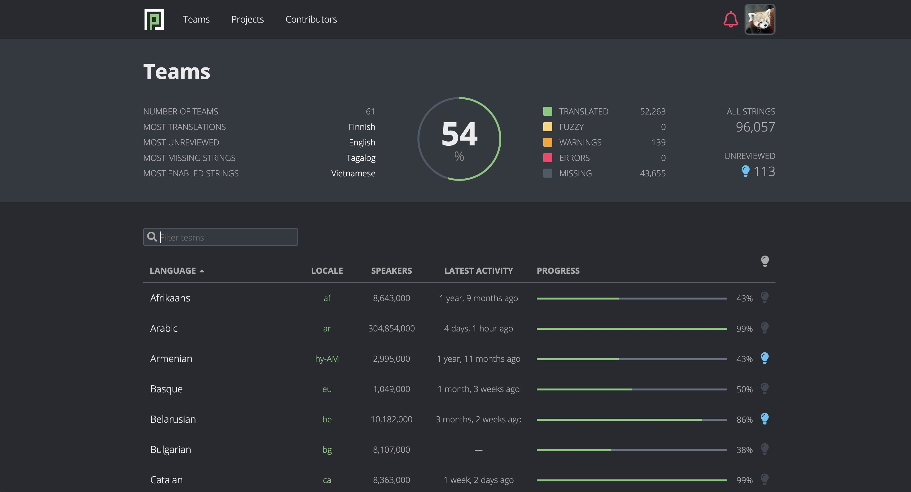

Anki Translation Project #
신청하기 #
Anki translation은 Firefox 브라우저를 개발한 Mozilla 재단에서 만든 Pontoon이라는 translation management system을 사용합니다. Anki 자체는 오픈소스이지만 개발자의 승낙을 통해 개발에 기여할 수 있는 것처럼, 개발자의 승낙을 통해서 번역 시스템에 참여할 수 있습니다.
신청과정은 간단합니다.
- 우선 anki support site에 접속해서 우측
Create a profile을 통해 가입해줍니다. - 가입 후 로그인하면 위 주소를 통해 Private Discussion을 생성할 수 있습니다. 이는 개발자인 Damien Elmes에게 전달됩니다.
- 참여 승인을 위해서 개발자가 요구하는 정보는 아래 4가지입니다.
- The language or languages you’d like to translate.
- Your email address. Please note that the email address you provide will be visible to people browsing GitHub.
- The username you’d like to use (for example, ‘bob5’)
- Please include the following text in your message: “I license any translations I contribute under the 3-clause BSD license.”
마지막에 언급된 ‘라이센스에 동의한다’는 문구를 내용에 꼭 포함시키는 것이 중요해보입니다.
위 정보를 Private Discussion의 내용에 입력하고, 제목은 “Volunteer as a contributor for anki translation” 등 적절하게 작성하셔서 포스트해주시면 됩니다. 며칠 기다리시면, 여러분이 지정한 이메일 ID와 랜덤하게 설정된 비밀번호를 답변으로 보내줍니다.
사이트 접속하기 #
https://i18n.ankiweb.net/ko/ 에 접속하시면 위에 Teams, Projects, Contributors 메뉴가 보입니다.
Teams #
번역에 참여하는 나라들을 보실 수 있습니다. 각 나라의 언어별로 하나의 team이 됩니다. 각 언어별 마지막 활동시간과 번역 완성도를 확인하실 수 있습니다. 아래 필터창에 korean을 검색하시면, 한국 팀이 뜹니다. 검색 후 팀명(Korean)을 클릭하시면 Project 화면으로 넘어갑니다.

Projects #
위에서 Teams - Korean을 검색 및 클릭하면 나오는 Project 화면은 한국어 번역 현황을 보여주는 Project 화면인 반면에, 홈페이지 상단의 Project 메뉴는 Anki 프로젝트가 전세계 언어로 얼마나 번역되었는지 전체 현황을 보여줍니다.
Anki Translation 프로젝트는 3가지 부분으로 구성됩니다.
- Core module: 데스크탑 및 모바일 버전 Anki에 공통적으로 사용되는 텍스트들을 포함하고 있습니다.
- Desktop module: 데스크탑 버전 Anki에 사용되는 텍스트들을 포함하고 있습니다.
- Mobile module: 모바일 버전 Anki에 사용되는 텍스트들을 포함하고 있습니다. 여기서 모바일이란, iOS를 말합니다. 안드로이드 버전인 AnkiDroid는 Anki와는 별개의 프로젝트로 번역을 진행하고 있습니다.

각 module을 클릭하면 Anki 메뉴의 텍스트들이 포함된 리소스 파일들이 나옵니다. 예를 들어, 아래 이미지에서 browsing.ftl은 Anki의 브라우저(탐색) 화면에서 등장하는 텍스트들을 포함하고 있습니다. 그 아래의 card-stats.ftl 파일은 카드 통계 화면에서 등장하는 텍스트들을 포함합니다. 즉, 각 텍스트들은 프로그램 상 실제 파일 단위로 나뉘어져 있습니다. 따라서 똑같은 Reviews 라는 단어라도, 표시되는 메뉴의 맥락에 따라 복습카드가 될수도 있고 복습량이 될수도 있습니다.

위 파일 중 browsing.ftl을 클릭하면, 아래와 같이 텍스트 목록과 번역 이력이 나옵니다. 이전에 누가 번역을 업데이트했는지 나오고, 해당 번역을 Approve 또는 Unapprove 할 수 있습니다. 여러 명이 협업하는 경우 수정사항을 적절하게 의논하는 것이 중요해보입니다. 일정 시간이 지나면 해당 번역이 Anki 프로젝트로 imported 됩니다. 이는 다음 베타 테스트 버전 Anki가 릴리즈될 때 반영된다고 합니다.

browsing.ftl 파일 이름을 클릭한 후 All Project로 검색 범위를 바꾸면, 모든 프로젝트에 특정 단어를 검색할 수 있습니다. 예를 들어, bury 라는 단어를 All Project 단위로 검색해서 해당 단어의 번역을 core, desktop, mobile 모두에 일관되게 유지할 수 있습니다.

그 외에 세부사항은 Anki Translation Guide를 참고하시면 됩니다.